| term | estimate | std.error | statistic | p.value |
|---|---|---|---|---|
| (Intercept) | 1672.0854 | 64.5606 | 25.8995 | 0.0000 |
| age | -10.6429 | 9.2268 | -1.1535 | 0.2516 |
| I(age^2) | -1.1427 | 0.3857 | -2.9627 | 0.0039 |
| I(age^3) | 0.0216 | 0.0059 | 3.6498 | 0.0004 |
| I(age^4) | -0.0001 | 0.0000 | -3.6540 | 0.0004 |
Non-linearity
Lucy D’Agostino McGowan
Non-linear relationships
What have we used so far to deal with non-linear relationships?
- Hint: What did you use in Lab 02?
- Polynomials!
Polynomials
\[y_i = \beta_0 + \beta_1x_i + \beta_2x_i^2+\beta_3x_i^3 \dots + \beta_dx_i^d+\epsilon_i\]
This is data from the Columbia World Fertility Survey (1975-76) to examine household compositions
Polynomials
\[y_i = \beta_0 + \beta_1x_i + \beta_2x_i^2+\beta_3x_i^3 \dots + \beta_dx_i^d+\epsilon_i\]

- Fit here with a 4th degree polynomial
How is it done?
- New variables are created ( \(X_1 = X\), \(X_2 = X^2\), \(X_3 = X^3\), etc) and treated as multiple linear regression
- We are not interested in the individual coefficients, we are interested in how a specific \(x\) value behaves
- \(\hat{f}(x_0) = \hat\beta_0 + \hat\beta_1x_0 + \hat\beta_2x_0^2 + \hat\beta_3x_0^3 + \hat\beta_4x_0^4\)
- or more often a change between two values, \(a\) and \(b\)
- \(\hat{f}(b) -\hat{f}(a) = \hat\beta_1b + \hat\beta_2b^2 + \hat\beta_3b^3 + \hat\beta_4b^4 - \hat\beta_1a - \hat\beta_2a^2 - \hat\beta_3a^3 -\hat\beta_4a^4\)
- \(\hat{f}(b) -\hat{f}(a) =\hat\beta_1(b-a) + \hat\beta_2(b^2-a^2)+\hat\beta_3(b^3-a^3)+\hat\beta_4(b^4-a^4)\)
Polynomial Regression
\[\hat{f}(b) -\hat{f}(a) =\hat\beta_1(b-a) + \hat\beta_2(b^2-a^2)+\hat\beta_3(b^3-a^3)+\hat\beta_4(b^4-a^4)\]
How do you pick \(a\) and \(b\)?
- If given no other information, a sensible choice may be the 25th and 75th percentiles of \(x\)
Polynomial Regression
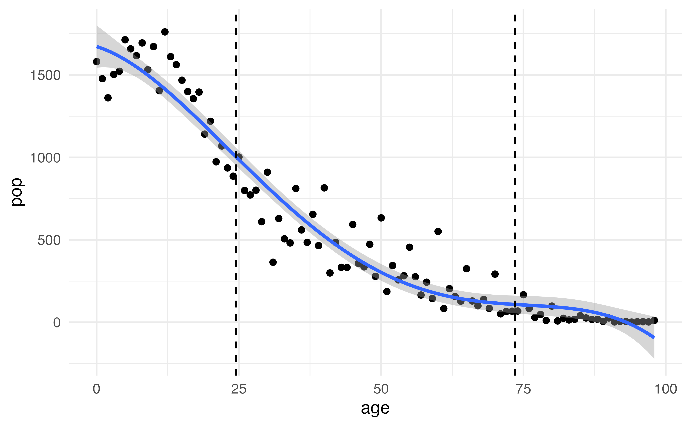
Application Exercise
\[pop = \beta_0 + \beta_1age + \beta_2age^2 + \beta_3age^3 +\beta_4age^4+ \epsilon\]
Using the information below, write out the equation to predicted change in population from a change in age from the 25th percentile (24.5) to a 75th percentile (73.5).
03:00
Choosing \(d\)
\[y_i = \beta_0 + \beta_1x_i + \beta_2x_i^2+\beta_3x_i^3 \dots + \beta_dx_i^d+\epsilon_i\]
Either:
- Pre-specify \(d\) (before looking 👀 at your data!)
- Use cross-validation to pick \(d\)
Why?
Polynomial Regression
Polynomials have notoriously bad tail behavior (so they can be bad for extrapolation)
What does this mean?
Step functions
Another way to create a transformation is to cut the variable into distinct regions
\[C_1(X) = I(X < 35), C_2(X) = I(35\leq X<65), C_3(X) = I(X \geq 65)\]

Step functions
- Create dummy variables for each group
- Include each of these variables in multiple regression
- The choice of cutpoints or knots can be problematic (and make a big difference!)
Step functions
\[C_1(X) = I(X < 35), C_2(X) = I(35\leq X<65), C_3(X) = I(X \geq 65)\]
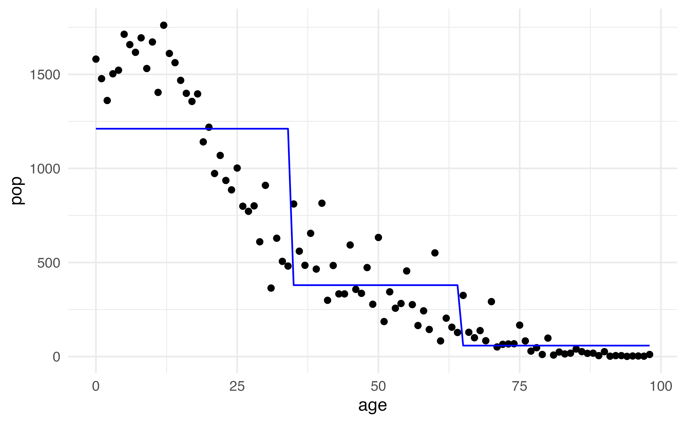
What is the predicted value when \(age = 25\)?
Step functions
\[C_1(X) = I(X < 15), C_2(X) = I(15\leq X<65), C_3(X) = I(X \geq 65)\]
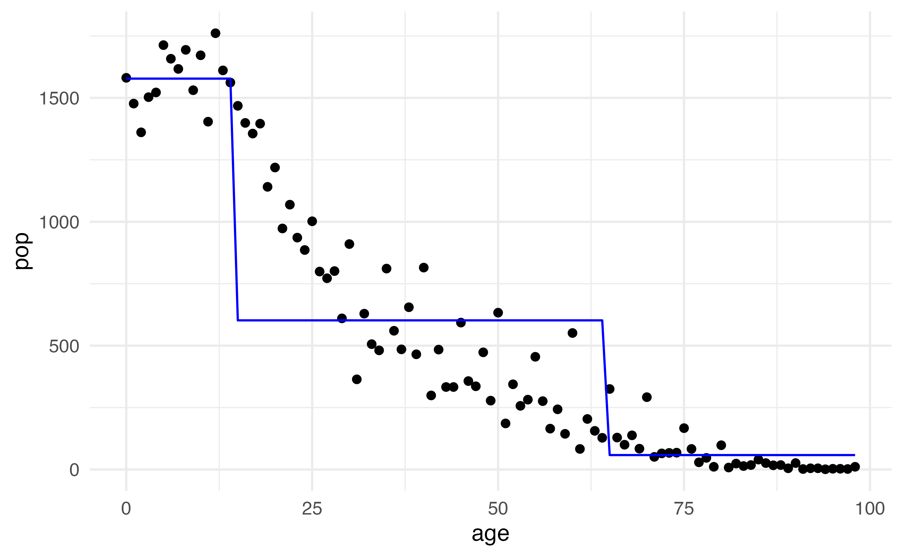
What is the predicted value when \(age = 25\)?
Piecewise polynomials
Instead of a single polynomial in \(X\) over it’s whole domain, we can use different polynomials in regions defined by knots
\[y_i = \begin{cases}\beta_{01}+\beta_{11}x_i + \beta_{21}x^2_i+\beta_{31}x^3_i+\epsilon_i& \textrm{if } x_i < c\\ \beta_{02}+\beta_{12}x_i + \beta_{22}x_i^2 + \beta_{32}x_{i}^3+\epsilon_i&\textrm{if }x_i\geq c\end{cases}\]
What could go wrong here?
- It would be nice to have constraints (like continuity!)
- Insert splines!
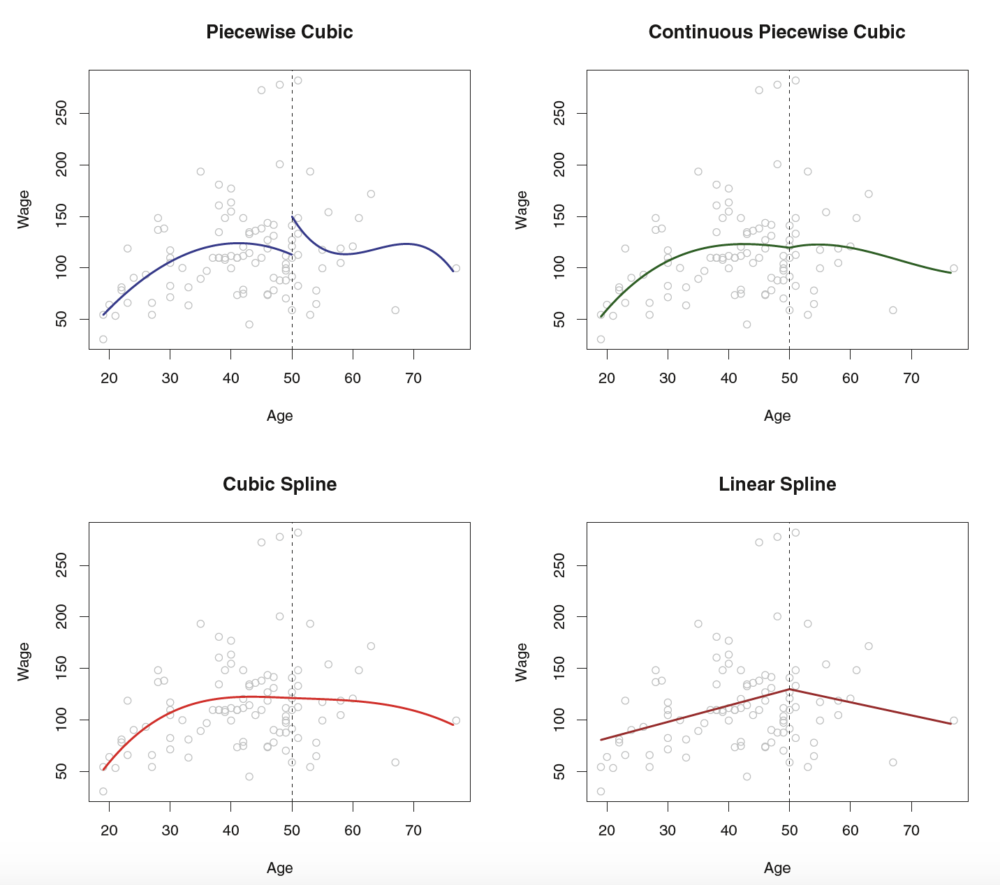
Linear Splines
A linear spline with knots at \(\xi_k\), \(k = 1,\dots, K\) is a piecewise linear polynomial continuous at each knot
\[y_i = \beta_0 + \beta_1b_1(x_i)+\beta_2b_2(x_i)+\dots+\beta_{K+1}b_{K+1}(x_i)+\epsilon_i\]
- \(b_k\) are basis functions
- \(\begin{align}b_1(x_i)&=x_i\\ b_{k+1}(x_i)&=(x_i-\xi_k)_+,k=1,\dots,K\end{align}\)
- Here \(()_+\) means the positive part
- \((x_i-\xi_k)_+=\begin{cases}x_i-\xi_k & \textrm{if } x_i>\xi_k\\0&\textrm{otherwise}\end{cases}\)
Application Exercise
Let’s create data set to fit a linear spline with 2 knots: 35 and 65.
| x |
|---|
| 4 |
| 15 |
| 25 |
| 37 |
| 49 |
| 66 |
| 70 |
| 80 |
- Using the data to the left create a new dataset with three variables: \(b_1(x), b_2(x), b_3(x)\)
- Write out the equation you would be fitting to estimate the effect on some outcome \(y\) using this linear spline
04:00
Linear Spline
| x |
|---|
| 4 |
| 15 |
| 25 |
| 37 |
| 49 |
| 66 |
| 70 |
| 80 |
➡️
| \(b_1(x)\) | \(b_2(x)\) | \(b_3(x)\) |
|---|---|---|
| 4 | 0 | 0 |
| 15 | 0 | 0 |
| 25 | 0 | 0 |
| 37 | 2 | 0 |
| 49 | 14 | 0 |
| 66 | 31 | 1 |
| 70 | 35 | 5 |
| 80 | 45 | 15 |
Application Exercise
Below is a linear regression model fit to include the 3 bases you just created with 2 knots: 35 and 65. Use the information here to draw the relationship between \(x\) and \(y\).
| term | estimate | std.error | statistic | p.value |
|---|---|---|---|---|
| (Intercept) | -0.3 | 0.2 | -1.3 | 0.3 |
| b1 | 2.0 | 0.0 | 231.3 | 0.0 |
| b2 | -2.0 | 0.0 | -130.0 | 0.0 |
| b3 | -3.0 | 0.0 | -116.5 | 0.0 |
07:00
Linear Splines
| \(b_1(x)\) | \(b_2(x)\) | \(b_3(x)\) |
|---|---|---|
| 4 | 0 | 0 |
| 15 | 0 | 0 |
| 25 | 0 | 0 |
| 37 | 2 | 0 |
| 49 | 14 | 0 |
| 66 | 31 | 1 |
| 70 | 35 | 5 |
| 80 | 45 | 15 |
Linear Splines
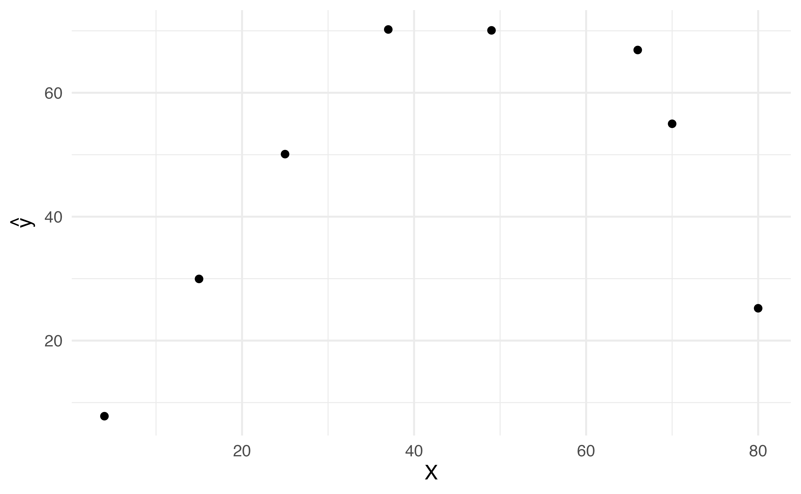
Linear Splines
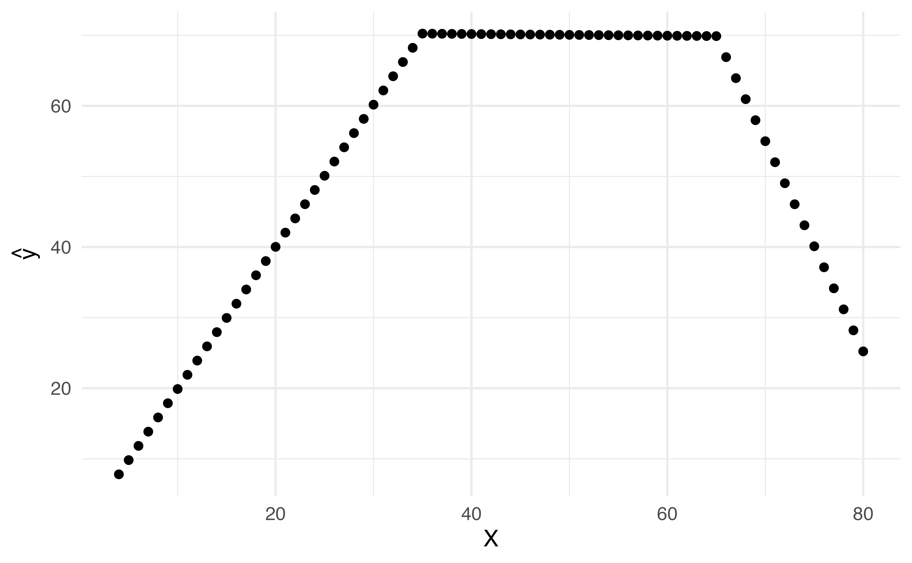
Cubic Splines
A cubic splines with knots at \(\xi_i, k = 1, \dots, K\) is a piecewise cubic polynomial with continuous derivatives up to order 2 at each knot.
Again we can represent this model with truncated power functions
\[y_i = \beta_0 + \beta_1b_1(x_i)+\beta_2b_2(x_i)+\dots+\beta_{K+3}b_{K+3}(x_i) + \epsilon_i\]
\[\begin{align}b_1(x_i)&=x_i\\b_2(x_i)&=x_i^2\\b_3(x_i)&=x_i^3\\b_{k+3}(x_i)&=(x_i-\xi_k)^3_+, k = 1,\dots,K\end{align}\]
where
\[(x_i-\xi_k)^{3}_+=\begin{cases}(x_i-\xi_k)^3&\textrm{if }x_i>\xi_k\\0&\textrm{otherwise}\end{cases}\]
Application Exercise
Let’s create data set to fit a cubic spline with 2 knots: 35 and 65.
| x |
|---|
| 4 |
| 15 |
| 25 |
| 37 |
| 49 |
| 66 |
| 70 |
| 80 |
- Using the data to the left create a new dataset with five variables: \(b_1(x), b_2(x), b_3(x), b_4(x), b_5(x)\)
- Write out the equation you would be fitting to estimate the effect on some outcome y using this cubic spline
05:00
Cubic Spline
| x |
|---|
| 4 |
| 15 |
| 25 |
| 37 |
| 49 |
| 66 |
| 70 |
| 80 |
➡️
| b1 | b2 | b3 | b4 | b5 |
|---|---|---|---|---|
| 4 | 16 | 64 | 0 | 0 |
| 15 | 225 | 3375 | 0 | 0 |
| 25 | 625 | 15625 | 0 | 0 |
| 37 | 1369 | 50653 | 8 | 0 |
| 49 | 2401 | 117649 | 2744 | 0 |
| 66 | 4356 | 287496 | 29791 | 1 |
| 70 | 4900 | 343000 | 42875 | 125 |
| 80 | 6400 | 512000 | 91125 | 3375 |
Cubic Spline
| term | estimate | std.error | statistic | p.value |
|---|---|---|---|---|
| (Intercept) | 1.172 | 8.282 | 0.141 | 0.900 |
| b1 | 1.520 | 1.565 | 0.971 | 0.434 |
| b2 | 0.040 | 0.075 | 0.528 | 0.650 |
| b3 | -0.001 | 0.001 | -0.855 | 0.483 |
| b4 | 0.001 | 0.002 | 0.635 | 0.590 |
| b5 | -0.006 | 0.007 | -0.860 | 0.480 |
Cubic Splines
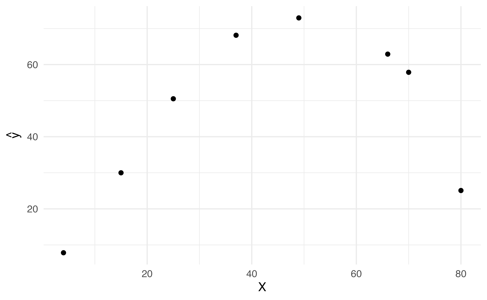
Cubic Splines
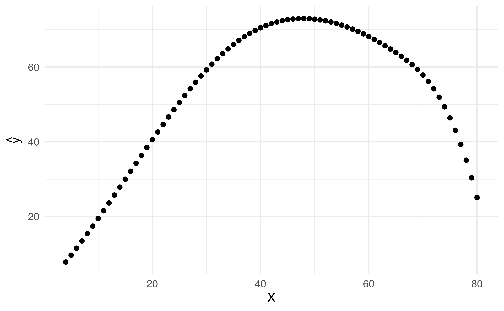
Cubic Splines
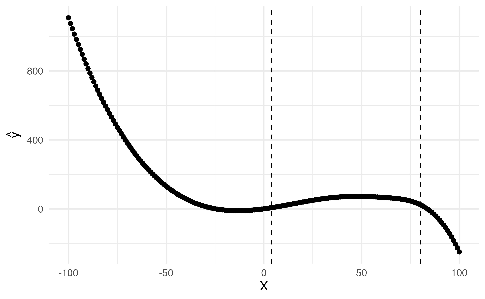
Natural cubic splines
A natural cubic spline extrapolates linearly beyond the boundary knots
This adds 4 extra constraints and allows us to put more internal knots for the same degrees of freedom as a regular cubic spline
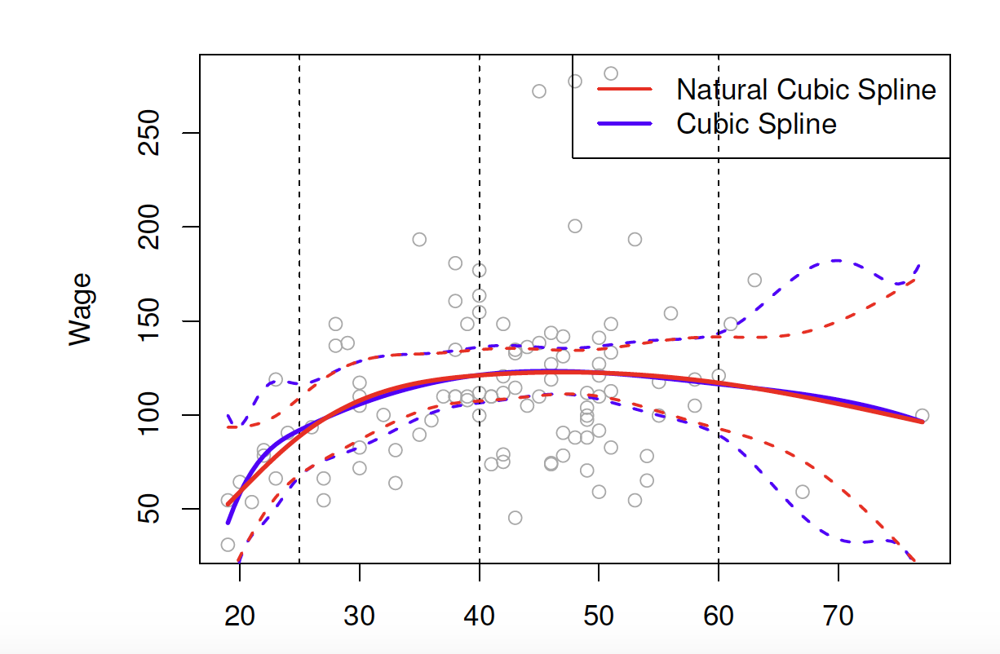
Natural Cubic Splines
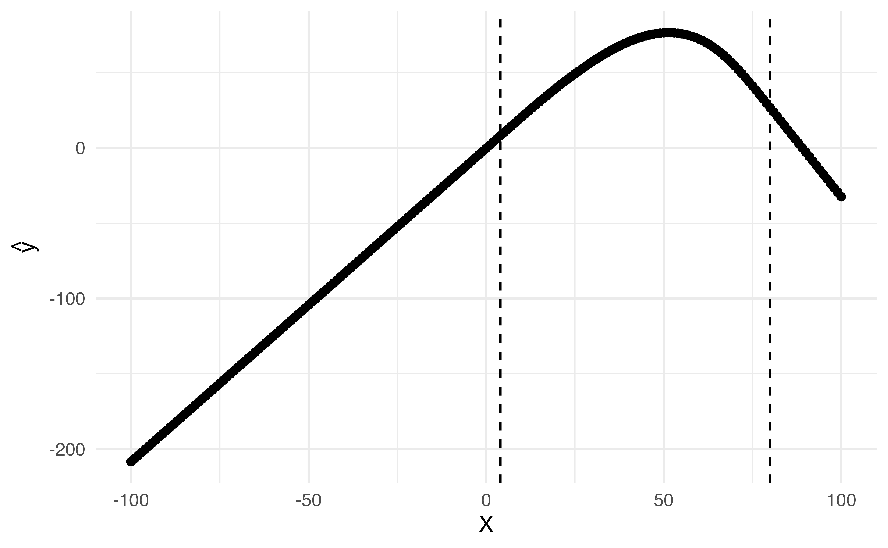
Natural Cubic Splines
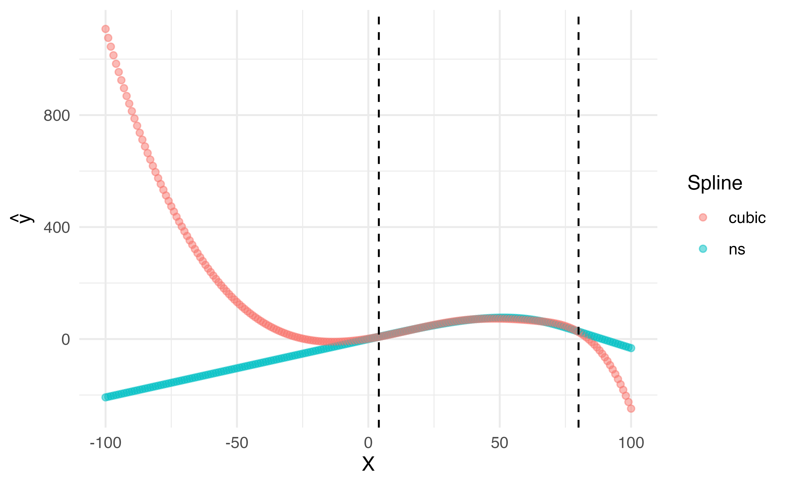
Natural Splines
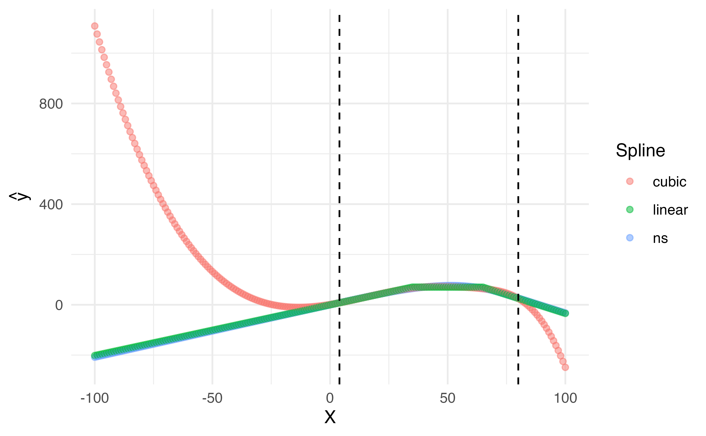
Knot placement
- One strategy is to decide \(K\) (the number of knots) in advance and then place them at appropriate quantiles of the observed \(X\)
- A cubic spline with \(K\) knots has \(K+3\) parameters (or degrees of freedom!)
- A natural spline with \(K\) knots has \(K-1\) degrees of freedom
Knot placement
Here is a comparison of a degree-14 polynomial and natural cubic spline (both have 15 degrees of freedom)
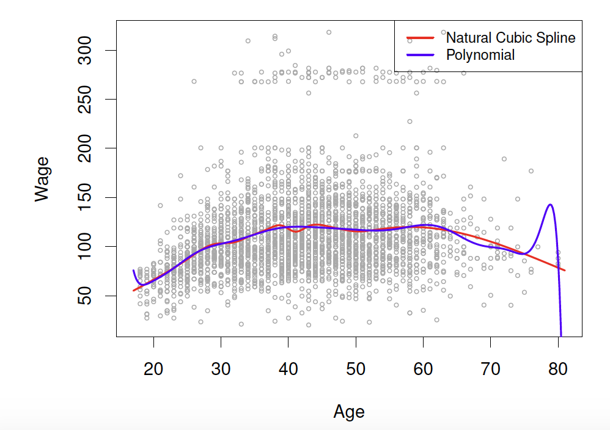

Dr. Lucy D’Agostino McGowan adapted from slides by Hastie & Tibshirani